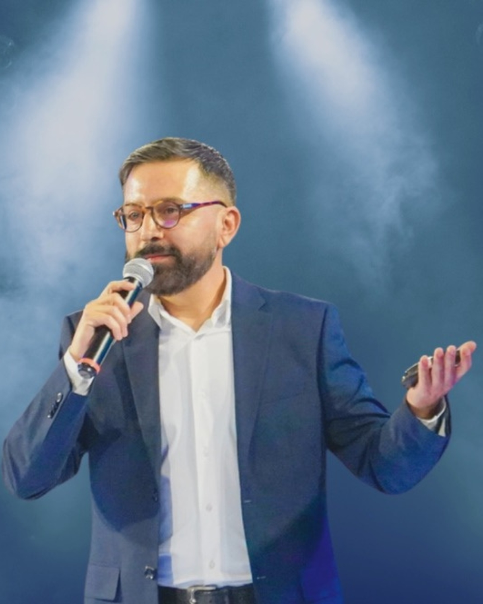

Durante años vi lo mismo en dos mundos muy distintos.
Por un lado, personas que entendían mucho sobre sí mismas, pero no lograban sostener lo que sabían en su vida real.
Por otro lado, organizaciones con estrategia, recursos y talento, pero sin capacidad para convertir eso en conducta observable y transformación sostenible.
Ahí entendí algo que terminó organizando todo mi trabajo: muchas veces el problema no es información. Es entrenamiento.

Soy Angelo Constanzo. Psicólogo, coach, consultor y creador de sistemas de entrenamiento humano.
Mi enfoque mezcla profundidad psicológica, conversación directa, experiencia grupal, liderazgo, cultura y herramientas prácticas.
No me interesa ayudarte solo a entender. Me interesa ayudarte a transformar.
La capacidad de regularnos, de sostener decisiones, de liderar con presencia, de conversar mejor, de adaptarnos sin perdernos y de construir una vida o una cultura con más verdad.
Por eso existe este trabajo. Para entrenar lo que de verdad importa.